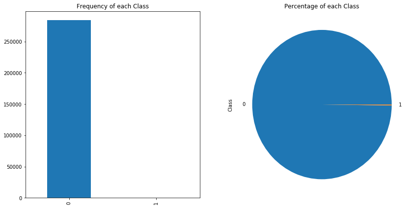
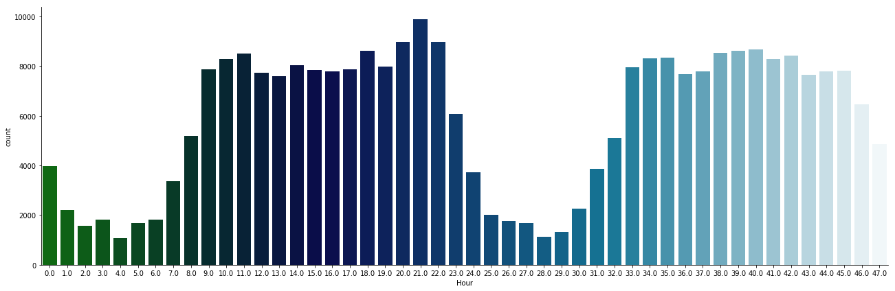

The datasets contains transactions made by credit cards in September 2013 by european cardholders. This dataset presents transactions that occurred in two days, where we have 492 frauds out of 284,807 transactions. The dataset is highly unbalanced, the positive class (frauds) account for 0.172% of all transactions.
It contains only numerical input variables which are the result of a PCA transformation. Unfortunately, due to confidentiality issues, we cannot provide the original features and more background information about the data. Features V1, V2, … V28 are the principal components obtained with PCA, the only features which have not been transformed with PCA are ‘Time’ and ‘Amount’. Feature ‘Time’ contains the seconds elapsed between each transaction and the first transaction in the dataset. The feature ‘Amount’ is the transaction Amount, this feature can be used for example-dependant cost-senstive learning. Feature ‘Class’ is the response variable and it takes value 1 in case of fraud and 0 otherwise.
This report show how build a credit card fraud detection model.
Outline
1: Understanding our data
Exploring Data
Detect missing value
2:Feature Engineering
2.1: Creating ‘Hour’ Feature
2.2: Exploring patterns difference between Normal and Fraud Transanctions
2.3: Exploring feature distribution difference between Normal and Fraud transactions
2.4: Feature scaling with ‘Hour’ and ‘Amount’
2.5: Exploring feature importance
3: Splitting the Data (Original DataFrame)
4: Random Under-Sampling
5:Modeling
6:Evaluation
1: Understanding our data
1 2 3 4 5 6 7 8 9 10 11 12 13 14 15
import pandas as pd import numpy as np
import seaborn as sns import matplotlib.pyplot as plt
import matplotlib.gridspec as gridspec
# Classifier Libraries from sklearn.linear_model import LogisticRegression from sklearn.svm import SVC from sklearn.neighbors import KNeighborsClassifier from sklearn.tree import DecisionTreeClassifier from sklearn.ensemble import RandomForestClassifier import collections
Summary: The transaction amount is relatively small. The mean of all the mounts made is approximately USD 88. There are no “Null” values, so we don’t have to work on ways to replace values. Most of the transactions were Non-Fraud (99.83%) of the time, while Fraud transactions occurs (017%) of the time in the dataframe

1 2 3 4 5 6 7 8 9 10 11 12
print('Normal transactions:',round(data['Class'].value_counts()[0]/len(data['Class'])*100,2), 'of the dataset') print('Fraud transactions:',round(data['Class'].value_counts()[1]/len(data['Class'])*100,2), 'of the dataset')
fig, axs = plt.subplots(1,2,figsize=(14,7)) axs[0].set_title("Frequency of each Class") data['Class'].value_counts().plot(kind='bar',ax=axs[0])
axs[1].set_title("Percentage of each Class") data['Class'].value_counts().plot(kind='pie',ax=axs[1]) plt.show()
2.Feature Engineering
2.1: Creating ‘Hour’ Feature
1
data['Hour']=data["Time"].apply(lambda x : divmod(x, 3600)[0])
2.2:Exploring patterns difference between Normal and Fraud Transanctions
Difference 1: For the fraud transactions: the correlation between some of the variables is more pronounced. The variation between V1, V2, V3, V4, V5, V6, V7, V9, V10, V11, V12, V14, V16, V17 and V18 and V19 presents a certain pattern
Difference 3: The most frequent fraud transactions were happended at 11:am on the first day. The rest of Fraud transactions were happened between 11pm-9am. Indicating that the credit theft don’t want to attract the credit card owner’s attention, so they prefer to choose the time when the owner sleep and the time when consumption frequency is high.

1 2
# High Consumption frequency: between 9:00 am to 11:00 pm sns.factorplot(x='Hour',data=data,kind="count", palette="ocean", size=6, aspect=3)
2.3: Exploring feature distribution difference between Normal and Fraud transactions
Figures below present the distribution of different variables between Normal and Fraud,we should choose those variables which has significant difference. We drop variables:’V8’, ‘V13’, ‘V15’, ‘V20’, ‘V21’, ‘V22’, ‘V23’, ‘V24’, ‘V25’, ‘V26’, ‘V27’, ‘V28’
#导入库 from sklearn.ensemble import RandomForestClassifier import plotly.offline as py py.init_notebook_mode(connected=True) import plotly.graph_objs as go import plotly.tools as tls
### 3: Splitting the Data (Original DataFrame) Before proceeding with the Random UnderSampling technique we have to separate the orginal dataframe. Why? for testing purposes, we want to test our models on the original testing set not on the testing set created by either of UnderSampling or Oversampling techniques. The main goal is to fit the model either with the dataframes that were undersample and oversample (in order for our models to detect the patterns), and test it on the original testing set.